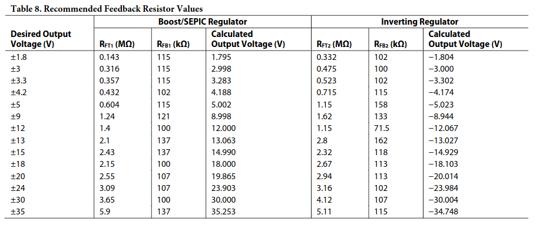
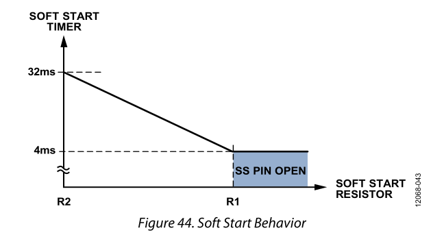
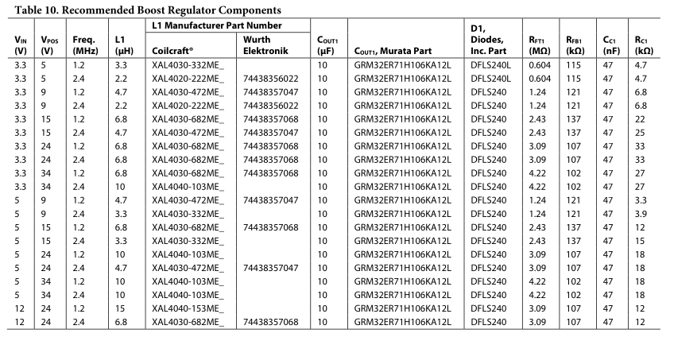
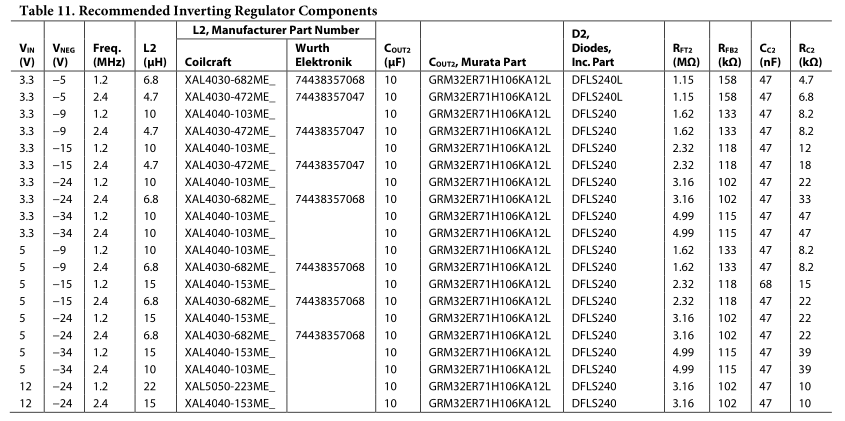
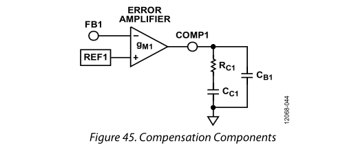

Baseboard Design Reference Document
The baseboard module contains all the signal and power IO for the
effects module. Input voltage of 9V DC is regulated to +/- 9V to drive
an analog switch and the effects board and to +3.3V to drive the LED
indicators and footswitches. A 16-bit microcontroller manages the
switching logic, interfaces with peripherals, and supervises the power
supply circuit. The audio input and output are routed to the effects
board via the switching circuitry through a flat flex cable.
[BLOCK DIAGRAM]
In order to generate plots and perform design analysis, libraries
must be imported below:
import numpy as np
from matplotlib import pyplot as plt
plt.style.use('refdoc.mplstyle')
from matplotlib.ticker import EngFormatter
# define formatter for frequency
formatter_Hz = EngFormatter(unit='Hz', sep="")
# define formatter for time
formatter_s = EngFormatter(unit='s', sep="")
# define formatter for resistance
formatter_Ohm = EngFormatter(unit='Ω', sep="")
#define formatter for dBV
formatter_dBV = EngFormatter(unit='dBV', sep="")
Specifications
- Power
- The Baseboard shall provide a ± 9V, ± 1% power supply capable of
sourcing ± 200mA peak to the audio effects board
- The Baseboard shall provide low-voltage power circuitry capable of
operation from +1.2V, ± 1% to +5V, ± 1%
- The Baseboard shall be capable of sourcing 150mA peak to drive local
peripherals
- Noise from any power supply must be below -40dB at all frequencies
and below -60dB above 100Hz
- Input/Output
- The Baseboard shall route the audio signal to the baseboard while
providing a true bypass path directly to the output
- The Baseboard shall provide input impedance of 1MΩ ± 1% and output
impedance of 49.9kΩ ± 1%
- Input Filter
- Output Filter
- Switching
- The audio signal shall be switched using high quality analog
switches to maximize durability and signal integrity
- The switches shall have an impedance of no greater than 500Ω to
minimize impedance matching losses
min_freq = 0.3
max_freq = 100E6
frequency = np.logspace(np.log10(min_freq), np.log10(max_freq), 30000, base=10)
noise_spec_9V = []
noise_spec_LV = []
corner_freq_9V = 100
corner_freq_LV = 100
for freq in frequency:
if freq < corner_freq_9V:
noise_spec_9V.append(-40)
else:
noise_spec_9V.append(-60)
if freq < corner_freq_LV:
noise_spec_LV.append(-30)
else:
noise_spec_LV.append(-55)
fig, ax = plt.subplots(1, 1)
ax.plot(frequency, noise_spec_9V, label='±9V Supply')
ax.plot(frequency, noise_spec_LV,label='+3.3V Supply')
ax.set_xscale('log')
ax.xaxis.set_major_formatter(formatter_Hz)
ax.yaxis.set_major_formatter(formatter_dBV)
ax.set_ylim(-100, 0)
ax.set_title("Voltage Noise")
fig.suptitle("Power Supply Output Noise Limit")
ax.legend()
fig.tight_layout()
I_OUT1 = 200E-3
I_OUT2 = -200E-3
Feedback Resistors
To select the appropriate feedback resistors, the following
relationships were taken from the datasheet to compute the correct
values.
The positive output for the boost regulator can be set using the
relationship
$$ V_{POS} = V_{FB1} \left( 1 +
\frac{R_{FT1}}{R_{FB1}} \right) $$
where VPOS
is the positive output voltage, VFB1 is
the FB1 reference
voltage, RFT1 is
the feedback resistor from VPOS
to FB1, and RFB1 is
the feedback resistor from FB1 to AGND.
The negative output for the inverting regulator can be set using the
relationship
$$ V_{NEG} = V_{FB2} -
\frac{R_{FT2}}{R_{FB2}} \left( V_{REF} - V_{FB2} \right) $$
where VNEG
is the negative output voltage, VFB2 is
the FB2 reference
voltage, RFT2 is
the feedback resistor from VNEG
to FB2, RFB2 is
the feedback resistor from FB2 to VREF,
and VREF
is the VREF
pin reference voltage.
Recommended values can also be selected from the table below, from
the manufacturer's datasheet.

In order to have the correct margin to allow for the linear regulator
drop-out voltage, output voltages of ± 12V were selected, yielding the
following values for the feedback resistors as taken from the table.
RFT1 = 1.4MΩ
RFB1 = 100kΩ
RFT2 = 1.15MΩ
RFB2 = 71.5kΩ
The low-noise precision resistors chosen for the design do not
support values above 1MΩ, so these ratios must
be reconfigured to have the largest value resistor be 1MΩ. The relationships
above can be rewritten to solve for the other resistor value.
$$ R_{FB1} =
\frac{R_{FT1}}{\frac{V_{POS}}{V_{FB1}}-1} $$
$$ R_{FB2} = R_{FT2}\frac{V_{REF} -
V_{FB2}}{V_{FB2}-V_{NEG}} $$
V_POS = 12
V_NEG = -12
V_IN = 8.55
V_FB1 = 0.8 # from datasheet page 3
V_FB2 = 0.8 # from datasheet page 4
V_REF = 1.6 # from datasheet page 4
R_FT1 = 1E6
R_FT2 = 1E6
R_FB1 = R_FT1 / ( (V_POS / V_FB1) - 1 )
R_FB2 = R_FT2 * (V_REF - V_FB2) / (V_FB2 - V_NEG)
print(f"R_FT1 = {R_FT1} Ω")
print(f"R_FB1 = {R_FB1} Ω")
print(f"R_FT2 = {R_FT2} Ω")
print(f"R_FB2 = {R_FB2} Ω")
R_FT1 = 1000000.0 Ω
R_FB1 = 71428.57142857143 Ω
R_FT2 = 1000000.0 Ω
R_FB2 = 62500.0 Ω
Output Capacitors
The capacitor dielectric is chosen to be X5R or X7R to provide
adequate temperature and DC bias characteristics. The worst-case
capacitance considering temperature variation, tolerance, and voltage
can be found using the following equation from the datasheet
CEFF = CNOM(1−δTEMP)(1−δBIAS)(1−δTOL)
where CEFF
is the effective capacitance at the specified operating voltage, CNOM
is the nominal datasheet capacitance, δTEMP
is the worst-case capacitor temperature derating coefficient, δBIAS
is the DC bias derating at the specified output voltage, and δTOL
is the worst-case component tolerance.
The datasheet suggests a value of 10μF as a compromise
between performance and size - a value of 22μF was selected to
provide additional filtering without compromising performance by a large
amount. This value will provide extremely comfortable margins at the
worst-case values determined above, and will provide better filtering
than the recommended value with better response time. Thus,
COUT+ = COUT− = 22μF
C_OUT = 20E-6
D_TEMP = 0.014
D_BIAS = 0.120
D_TOL = 0.200
C_OUT_ESR = 2.5E-3
C_OUT_EFF = C_OUT * ( 1 - D_TEMP ) * ( 1 - D_BIAS ) * ( 1 - D_TOL )
C_PVIN = 22E-6
C_PVINSYS = 22E-6
VREG
Capacitor
The datasheet requires a 1.0μF ceramic capacitor
between the VREG pin and AGND.
VREF
Capacitor
The datasheet requires a 1.0μF ceramic capacitor
between the VREF pin and AGND.
Soft Start Resistor
Soft start is not a required feature, but it can be implemented and
the resistor DNP'ed to save on cost if desired. The plot below shows the
relationship between the soft start time and the value of the timing
resistor. A resistor value of 71.5kΩ yields a soft start
time of approximately 29ms and is already being
used in the circuit as RFB2.

fig, ax = plt.subplots(1, 1)
R_SOFT_START = np.linspace(50E3, 268E3, 800)
t_SOFT_START = 38.4E-3 - 1.28E-7 * R_SOFT_START
ax.plot(R_SOFT_START, t_SOFT_START, label='Soft Start Resistor Values')
R_SOFT_START = 71.5E3
t_SOFT_START = 38.4E-3 - 1.28E-7 * R_SOFT_START
ax.plot(R_SOFT_START, t_SOFT_START, '.', label='Selected Resistance')
ax.yaxis.set_major_formatter(formatter_s)
ax.xaxis.set_major_formatter(formatter_Ohm)
ax.set_title("Timing Resistor Value vs. Soft Start Time")
fig.suptitle("Power Supply Soft Start")
ax.legend()
fig.tight_layout()
Diodes
A low forward voltage Schottky diode with less than 40pF junction capacitance
is recommended for D1 and D2. The selected diode, the Diodes
Incorporated DFLS240L-7, has a typical forward voltage VDF = 450mV
and a typical junction capacitance of 90pF. This capacitance is
higher than recommended, but the efficiency losses will be minimal.
V_DF = 450E-3
C_D = 90E-12
Boost Regulator Inductor
The datasheet recommends an inductor value between 1μH and 22μH as a good compromise
between inductor current ripple and efficiency. The inductor ripple
current in the worst-case, the continuous conduction mode, can be
calculated. The switch duty cycle, DUTY1,
can be found from the relationship below.
$$ DUTY_1 = \left( \frac{V_{POS} - V_{IN}
+ V_{DF}}{V_{POS} + V_{DF}} \right)$$
The DC input current during the constant current mode can be found
from the equation below.
$$ I_{IN} = \frac{I_{OUT1}}{1 -
DUTY_1}$$
Using the duty cycle and switching frequency, the switch on time can
be obtained as follows. The switching frequency is chosen here to be
either 1.2MHz or 2.4MHz.
$$ t_{ON1} = \frac{DUTY_1}{f_{SW}}
$$
Finally, the on time is then used to find the inductor size as a
function of inductor ripple current at steady-state.
$$ L1 = \frac{V_{IN}t_{ON1}}{\Delta
I_{L1}} $$
Assuming inductor ripple current of 30% the maximum DC input current
yields the following expression.
$$ L1 =
\frac{V_{IN}t_{ON1}\left(1-DUTY_1\right)}{0.3I_{OUT_1}} $$
To ensure stability, the minimum inductance is given by the below
equation from the datasheet.
$$ L1_{MIN} = V_{IN} \left(
\frac{0.27}{1-DUTY_1} - 0.33\right) \left[ \mu H\right]$$

f_SW = 2.4E6
DUTY_1 = ( V_POS - V_IN + V_DF ) / (V_POS + V_DF)
I_IN = I_OUT1 / ( 1 - DUTY_1 )
t_ON1 = DUTY_1 / f_SW
L1 = V_IN * t_ON1 * ( 1 - DUTY_1) / ( 0.3 * I_OUT1)
L1_MIN = 1E-6 * V_IN * ( ( 0.27 / (1 - DUTY_1)) - 0.33)
print("L1 =", L1)
print("L1_MIN =", L1_MIN)
L1 = 1.2773080272898825e-05
L1_MIN = 5.399999999999998e-07
Inverting Regulator Inductor
Similarly, the inductor value for the inverting regulator's inductor
can be derived. Again starting with the duty cycle, DUTY2
we obtain the following expression.
$$ DUTY_2 = \left( \frac{|V_{NEG}| +
V_{DF}}{V_{IN} + |V_{NEG}| + V_{DF}} \right) $$
The DC current in the constant current mode can then be found as a
function of the duty cycle.
$$ I_{L2} = \frac{I_{OUT2}}{1 - DUTY_2}
$$
The switch on time is also expressed as a function of the duty
cycle.
$$ t_{ON2} = \frac{DUTY_2}{f_{SW}}
$$
And again, the inductance value can be obtained from the on time and
the inductor ripple current.
$$ L2 = \frac{V_{IN}t_{ON2}}{\Delta
I_{L2}} $$
Again assuming a ripple current of 30% the maximum DC current will allow the
expression to be solved as follows.
$$ L2 = \frac{V_{IN}t_{ON2}\left( 1 -
DUTY_2\right)}{0.3I_{OUT2}} $$
To ensure stability, the L2
inductor value must be greater than the minimum inductance obtained
below.
$$ L2_{MIN} = V_{IN}\left( \frac{0.27}{1 -
DUTY_2} - 0.33\right) \left[ \mu H\right]$$

DUTY_2 = ( np.abs(V_NEG) + V_DF ) / ( V_IN + np.abs(V_NEG) + V_DF )
I_L2 = I_OUT2 / ( 1 - DUTY_2 )
t_ON2 = DUTY_2 / f_SW
L2 = V_IN * t_ON2 * ( 1 - DUTY_2 ) / ( 0.3 * np.abs(I_OUT2) )
L2_MIN = 1E-6 * V_IN * ( ( 0.27 / ( 1 - DUTY_2)) - 0.33 )
print("L2 =", L2)
print("L2_MIN =", L2_MIN)
L2 = 1.4331792091836734e-05
L2_MIN = 2.8485000000000008e-06
Boost Regulator Compensation
The ADP5070 allows for external loop compensation to optimize the
dynamics for a given application. The design of the compensation network
for the boost regulator is performed following the datasheet
recommendations as follows.

The boost regulator requires compensation such that the crossover
frequency occurs below the frequency of the right-half plane zero
introduced by the topology of the converter. The zero is can be
determined as shown,
$$ f_{Z1}(RHP) = \frac{R_{LOAD1}\left( 1 -
DUTY_1 \right)^2}{2\pi L1} $$
where fZ1(RHP)
is the right half plane zero frequency and RLOAD1
is the equivalent load resistance. The datasheet recommends that the
regulator crossover frequency be less than or equal to one-tenth the
right half plane zero frequency. The boost regulator loop gain is
$$ A_{VL1} =
\frac{V_{FB1}V_{IN}}{V_{POS}}G_{M1}|R_{OUT1}||Z_{COMP1}|G_{CS1}|Z_{OUT1}|
$$
where AVL1 is
the loop gain, VFB1 is
the feedback regulation voltage, VPOS
is the regulated positive output voltage, VIN is
the input voltage, GM1 is the error
amplifier transconductance gain, ROUT1
is the output impedance of the error amplifier and is 33MΩ, ZCOMP1
is the impedance of the series RC network from COMP1
to AGND,
GCS1 is
the current sense transconductance gain (the inductor current divided by
the voltage at COMP1),
which is internally set by the ADP5070 to 6.25 A/V, and finally ZOUT1
is the impedance of the load in parallel with the output capacitor.
To solve for the crossover frequency, the equation may be simplified
to
$$ A_{VL1} =
\frac{V_{FB1}V_{IN}}{V_{POS}}\frac{G_{M1}R_{C1}G_{CS1}}{2\pi
f_{C1}C_{OUT1}} = 1 $$
where fC1 is the
crossover frequency.
To solve for RC1, the
datasheet provides the following equation, where GM1 = 6.25A/V.
$$ R_{C1} = \frac{2\pi
f_{C1}C_{OUT1}V_{POS}^2}{V_{FB1}V_{IN}G_{M1}G_{CS1}} $$
From the datasheet, this equation can be simplified.
$$ R_{C1} = \frac{4188
f_{C1}C_{OUT1}V_{POS}^2}{V_{IN}} $$
For best accuracy, the datasheet recommends using the effective
capacitance of the output capacitor under DC bias conditions that will
be seen in operation.
Once the compensation resistor has been found, the zero can be set to
one-fourth the crossover frequency, per the datasheet's
recommendation.
$$ C_{C1} = \frac{2}{\pi f_{C1}R_{C1}}
$$
The parallel capacitor is then chosen to cancel the zero introduced
by the output capacitor ESR.
$$ C_{B1} = \frac{R_{ESR}
C_{OUT1}}{R_{C1}} $$
From the datasheet, for most applications, RC1 must be
within the range of 1kΩ to 200kΩ, and CC1 must be
within the range of 1nF to 68nF.
R_LOAD1 = V_POS / I_OUT1
f_Z1_RHP = ( R_LOAD1 * ( 1 - DUTY_1 )**2 ) / ( 2*np.pi * L1 )
f_C1 = f_Z1_RHP * 95E-3
V_FB1 = V_POS * R_FB1 / ( R_FB1 + R_FT1 )
G_M1 = 300E-6 # from datasheet
G_CS1 = 6.25 # from datasheet
R_C1 = ( 2*np.pi * f_C1 * C_OUT_EFF * V_POS**2 ) / ( V_FB1 * V_IN * G_M1 * G_CS1 )
C_C1 = 2 / ( np.pi * f_C1 * R_C1 )
C_B1 = C_OUT_ESR * C_OUT / R_C1
print("R_C1 =", R_C1)
print("C_C1 =", C_C1)
print("C_B1 =", C_B1)
R_C1 = 32806.31335384616
C_C1 = 5.793350733506955e-10
C_B1 = 1.5240968852764458e-12
Inverting Regulator Compensation
The design of the inverting regulator compensation network is similar
to that of the boost regulator compensation network. For the sake of
brevity, the detailed explanation has been omitted, but the process is
the same as above.
R_LOAD2 = V_NEG / I_OUT2
f_Z2_RHP = ( R_LOAD2 * ( 1 - DUTY_2 )**2 ) / ( 2*np.pi * L2 * DUTY_2 )
f_C2 = f_Z2_RHP * 95E-3
V_FB2 = V_NEG * R_FT2 / ( R_FB2 + R_FT2 )
G_M2 = 300E-6 # from datasheet
G_CS2 = 6.25 # from datasheet
R_C2 = ( 2*np.pi * f_C2 * C_OUT_EFF * np.abs(V_NEG) * ( V_IN + ( 2 * np.abs(V_NEG) ) ) ) / ( np.abs(V_FB2) * V_IN * G_M2 * G_CS2 )
C_C2 = 2 / ( np.pi * f_C2 * R_C2 )
C_B2 = C_OUT_ESR * C_OUT / R_C2
print("R_C2 =", R_C2)
print("C_C2 =", C_C2)
print("C_B2 =", C_B2)
R_C2 = 3330.504725701844
C_C2 = 1.0800204962904543e-08
C_B2 = 1.5012739544893877e-11